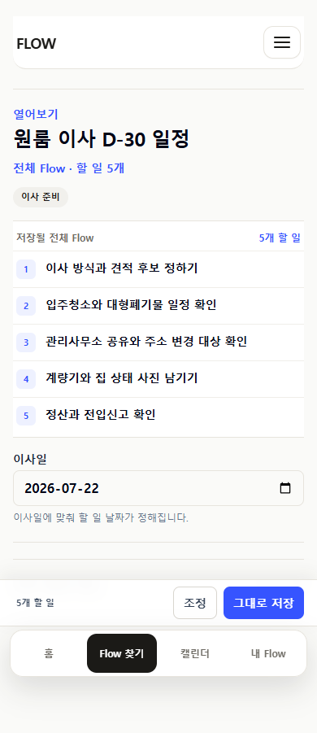
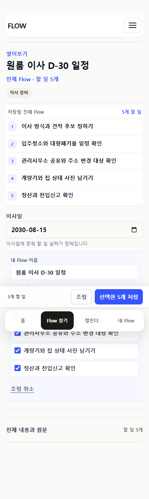
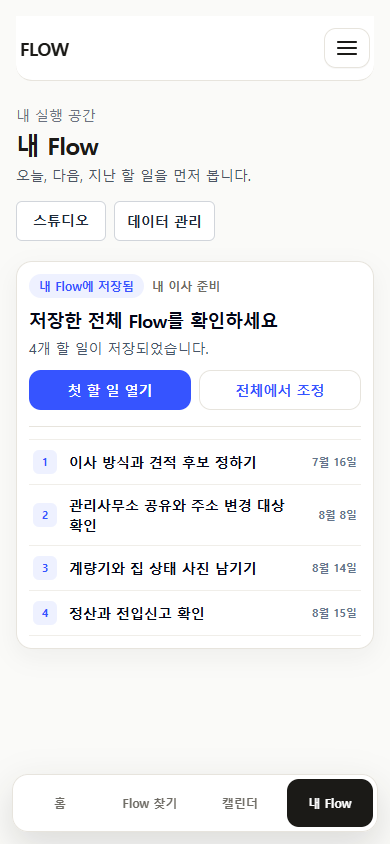
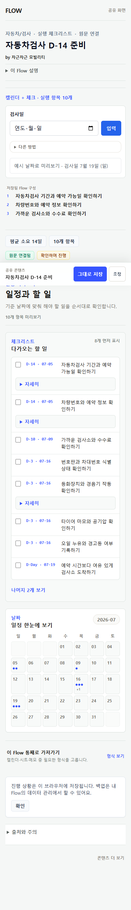
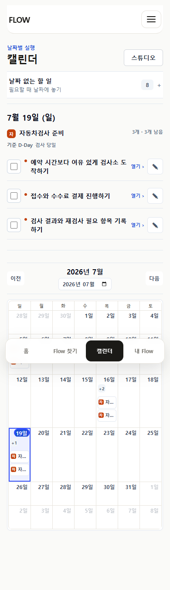
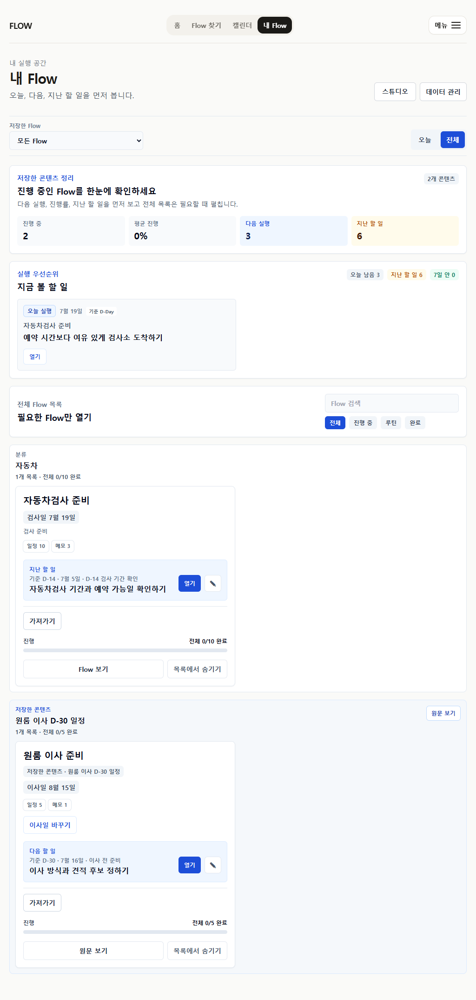

FLOWME · P24 FINAL INTERNAL READINESS
저장 전에 보고,
저장 직후 전체를 확인합니다.
긴 설명과 첫 항목 축약 사이에서 잃었던 전체 Flow를 복구했습니다. 이번 결과는 구현과 자동 검증의 완료이며, 실제 사용자 관찰은 아직 시작하지 않았습니다.
implementation complete · observation 0 / 15
전체 판정
J0-J5
bounded journey reset
4탭·schema·source 경계를 유지한 여정 재정렬
0
ordinary held exposure
저장 record는 보존하고 실행 화면에서는 제외
0 / 15
observed users
모집·요청·일정·세션 모두 미시작
한 여정으로 연결한 것
저장 전PASS
artifact first
실제 할 일 3~5개와 결과 형태가 먼저 보이고 source/detail은 접힙니다.
선택PASS
그대로 또는 조정
개인 제목·포함 항목만 가볍게 조정하며 full editor를 만들지 않습니다.
첫 저장PASS
whole Flow confirmation
Today로 축약하기 전에 저장된 전체 목록과 수를 depth 0으로 확인합니다.
재방문PASS
task-first My Flow
확인을 끝낸 뒤에는 오늘·다음·지난 할 일을 실행하는 기존 workspace로 돌아갑니다.
CalendarPASS
dated grid + undated tray
날짜 있는 일은 grid/agenda, 날짜 없는 일은 기본 접힌 tray가 맡습니다.
모바일·wide evidence






회귀와 evidence 경계
| 검증 | 결과 | 증거 성격 |
|---|---|---|
| unit / docs / build | 최종 command 결과 기록 | current_command |
| 390px / 1024px journeys | overflow·console·accessible action 확인 | current_browser |
| 별도 read-only reviewer | Blocking/High 독립 확인 | independent_agent_review |
| Claude Design 목업 | 진행 방향 비교 | prior_artifact |
| 실제 사용자 | 0 / 15, not scheduled | observed_user |